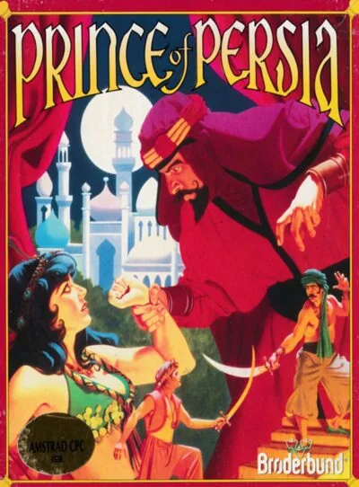
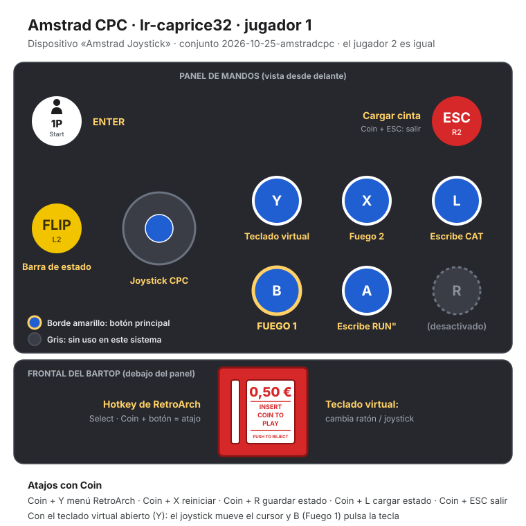

Amstrad CPC
Prince of Persia
- Año: 1990
- Desarrollador: Microïds
- Género: Plataformas
- Jugadores: 1 jugador
Aprovechando la ausencia del Sultán, el malvado Visir Jaffar gobierna con mano de hierro. Sólo un obstáculo se interpone en su camino al trono: la bella hija del sultán. Encerrándola en el interior de palacio, Jaffar le otorga tan sólo una hora para elegir: Casarse con él, o morir. La única esperanza de la princesa recae en su joven amado, pero lo que ella desconoce es que el muchacho se encuentra ya prisionero en las mazmorras del malvado Visir.
Controles
Probado en la bartop.
| Panel | Juego |
|---|---|
 | Correr |
 | Saltar · trepar |
 | Agacharse · bajar · coger objetos |
 | Andar con cuidado, colgarse, luchar con la espada |
 | Abrir el teclado virtual. Pulsa Coin para activar el puntero; el joystick lo mueve y B pulsa la tecla |
 + +  | Salir del juego |
El panel en Amstrad CPC


Argumento
Recopilado de internet (2026-11-02).
Persia medieval. Mientras el sultán está en guerra en tierras lejanas, su visir Jaffar, un brujo, se hace con el poder. Su único obstáculo es la hija del sultán: Jaffar la encierra en una torre y le da a elegir: casarse con él o morir en 60 minutos.
El protagonista, sin nombre y amado por la princesa, ha sido arrojado a las mazmorras del palacio. Para liberarla tiene que escapar, llegar a la torre y vencer a Jaffar antes de que se acabe el tiempo. Además de guardias y trampas, le estorba su propio doble, salido de un espejo mágico.
Fuentes
Jugabilidad
Recopilado de internet (2026-11-02). Lo marcado con ⚠️ no está probado en la bartop.
- Versión de la bartop: Amstrad CPC, en disco, versión francesa (textos en francés).
- Tiempo: 60 minutos para llegar a la torre. Si se acaba, la princesa desaparece y se acaba la partida. No hay contador de vidas: al morir vuelves al principio del nivel, pero el tiempo sigue corriendo.
- Vida: triangulitos rojos abajo; empiezas con tres. Pierdes uno por un espadazo, por caer dos pisos o por una roca.
- Trampas mortales: pinchos, fosos profundos (tres pisos o más) y guillotinas.
- Puertas: se abren un rato pisando un interruptor; hay que pasar antes de que se cierren y evitar los que las bloquean.
- Guardar: a partir del nivel 2 se puede guardar la partida.
Fuentes
Guía de niveles
Recopilado de internet (2026-11-02).
| Parte | Niveles |
|---|---|
| Niveles | Nivel 1Nivel 2Nivel 3…Nivel 12Nivel 13Nivel 14 (Jaffar) |
- ⚠️ Wikipedia dice que el original tiene 12 niveles; el longplay de Amstrad de «Vídeos» marca 14 (cuenta aparte los tramos finales).
- En el nivel 9 hay dos pociones verdes grandes: una pone la pantalla del revés y la otra la devuelve a la normalidad.
Fuentes
Objetos
Recopilado de internet (2026-11-02). Lo marcado con ⚠️ no está probado en la bartop.
| Poción | Qué hace |
|---|---|
| Roja pequeña | Recupera un triángulo de vida. |
| Azul pequeña | Veneno: quita un triángulo. |
| Roja grande | Suma un triángulo más a la vida máxima. |
| Verde grande | Permite flotar un rato (en el nivel 9, otra pone la pantalla del revés). |
Fuentes
Trucos y secretos
Recopilado de internet (2026-11-02). Lo marcado con ⚠️ no está probado en la bartop.
Secretos
- Guardar la partida a partir del nivel 2.
- Pantalla del revés: en el nivel 9, una poción verde grande la gira; otra la deja como estaba.
Fuentes
Longplay

Partida completa de la versión Amstrad CPC (47 min), de AL82 Retrogaming Longplays: Prince of Persia Longplay (Amstrad CPC) [QHD].
Pulsa el minuto de un nivel para ver el vídeo desde ese punto.